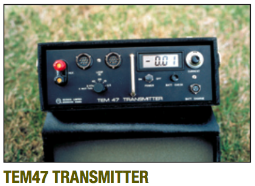
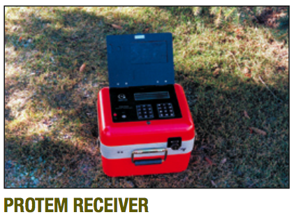
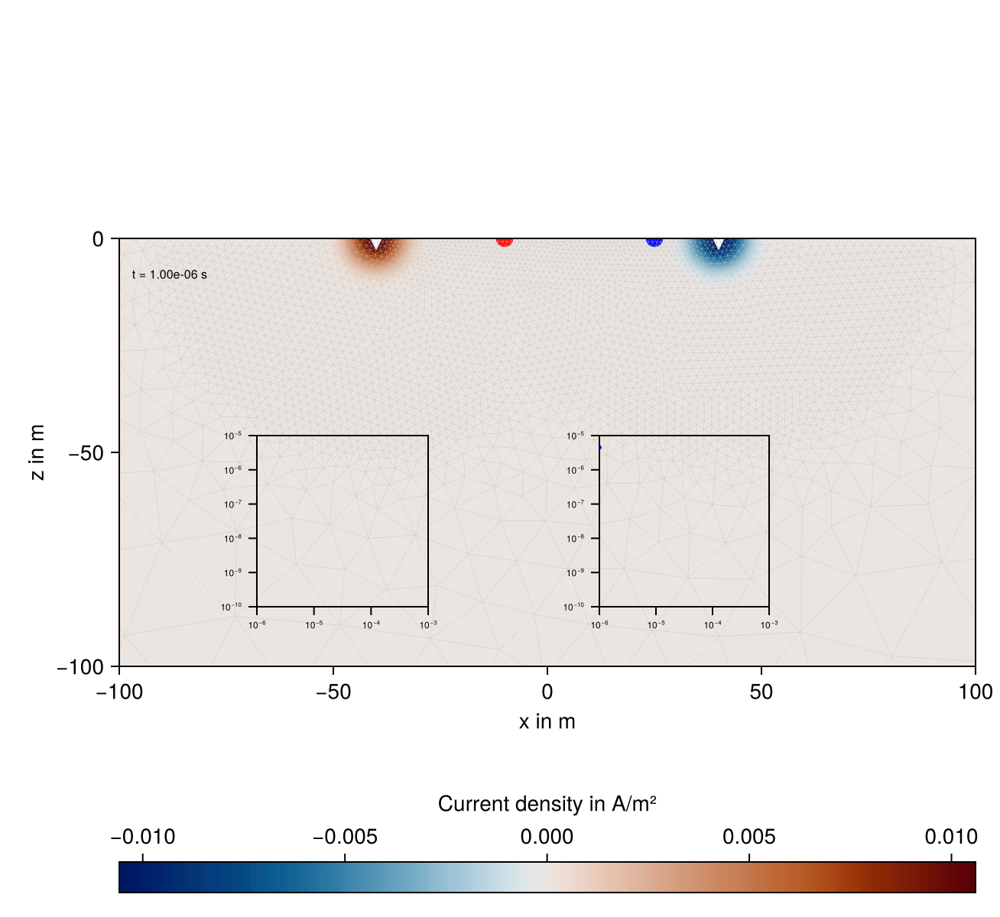
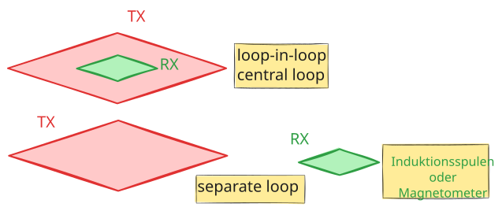

Die Transientelektromagnetik (TEM), auch als Time-Domain-Elektromagnetik (TDEM) bekannt, ist eine Methode der geophysikalischen Exploration, die auf der Induktion von elektromagnetischen Feldern im Untergrund basiert. Sie wird insbesondere für die Untersuchung der elektrischen Leitfähigkeit geologischer Strukturen eingesetzt.
Die Entwicklung geht zurück auf die 1950er Jahre. Heute sind sowohl land- als auch luftgestützte Messsysteme im Einsatz.


14.2 Prinzip der Methode
Bei der TEM-Methode wird ein primäres Magnetfeld durch eine Schleife oder eine Spule erzeugt, in der ein gepulster elektrischer Gleichstrom fließt. Beim abrupten Abschalten des Stroms bricht das Magnetfeld zusammen und induziert Wirbelströme im Untergrund, welche so orientiert sind, dass sie der Ursache ihre Entstehung entgegenwirken (Lenzsche Regel).
Die Wirbelströme besitzen ihrerseits ein sekundäres elektromagnetisches Feld, das mit Empfangsspulen oder Magnetometern bei Abwesenheit des primären Magnetfeldes gemessen wird.
Die zeitliche Entwicklung dieses sekundären Feldes hängt von der elektrischen Leitfähigkeit des Untergrunds ab.
14.2.1 Beispiel: Zwei leitfähige horizontale Zylinder

Stromdichte senkrecht zur Tafelebene mit Transienten
14.2.2 Messkonfigurationen
Es gibt verschiedene Konfigurationen für TEM-Messungen:
Zentrale Schleifenmessung (central loop, loop-in-loop): Sender- und Empfangsschleife sind konzentrisch angeordnet.
Offset-Schleifenmessung (separate loops): Der Empfänger ist außerhalb der Senderschleife positioniert, was eine größere Tiefenauflösung ermöglicht.
Borehole-TEM: Die Empfängerspule wird in ein Bohrloch abgesenkt, um tiefere Strukturen detailliert zu erfassen. Dipolmoment der horizontalen (an der Erdoberfläche ausgelegten) TX-Spule: \(\vb{m} = I A \, \vb{e}_{z}\)

14.3 Vorteile und Anwendungsbereiche
Vorteile:
Gute Tiefenreichweite (bis zu mehreren hundert Metern je nach Messkonfiguration und Untergrundbedingungen)
Hohe Sensitivität für leitfähige Strukturen
Vergleichsweise schnelle und effiziente Datenerhebung (Simultane Multifrequenzmessung)
Messung in Abwesenheit des Primärfeldes
Anwendungen:
Exploration von Grundwasserleitern (SkyTEM, Aarhus, DK)
Kartierung von Erzlagerstätten und mineralischen Rohstoffen
Untersuchung von kontaminierten Standorten und Umweltgeophysik
Charakterisierung von geothermischen Reservoiren
Monitoring von vulkanischer Aktivität
14.4 Interpretation der Messergebnisse
Die Auswertung der Messdaten erfolgt über eine Inversion der gemessenen Transienten, um daraus ein Modell der elektrischen Leitfähigkeitsverteilung im Untergrund zu berechnen. Numerische Verfahren, wie 1D-, 2D- oder 3D-Modellrechnungen und Inversionsalgorithmen, werden zur Interpretation herangezogen.
In der Praxis wird Feld nach Ausschalten des Stromes gemessen. Deshalb ist die Stromfunktion dann \[
I(t) = I_{0} (1 - u(t))
\]
14.4.2 Impulsantwort \(f(t)\)
Ausgangssignal eines Systems, bei dem am Eingang ein Diracimpuls zugeführt wird.
14.4.3 Sprungfunktionsantwort \(g(t)\)
In der Praxis wird mit Sprungfunktion angeregt und die Sprungfunktionsantwort gemessen, die das Übertragungsverhalten eines Systems ebenfalls vollständig beschreibt. Dadurch vermeidet man, einen Dirac-Impuls in der Stromfunktion \[
I_{\delta} = I_{0} \delta(t)
\] realisieren zu müssen.
Zusammenhang zwischen beiden: \[
\delta(t) = \frac{ \mathrm du }{ \mathrm dt }
\]
\[
f(t) = \frac{ \mathrm dg }{ \mathrm dt }
\]
14.5 Explizite Formeln für den homogenen Halbraum
Für den homogenen Halbraum gibt explizite Ausdrücke es für den Fall, dass sich TX und RX bei HCP-Konfiguration in der Ebene \(z=0\) befinden:
\[
\begin{align}
\rho & = [100, 1, 100] \ \Omega\cdot m \\
d & = [20, 10] \ m \\
t & \in [10^{-6}, 1] \ s
\end{align}
\]
TX-RX-Offset: \(100\) m, Konfiguration: HCP in \(z=0\). Lufthalbraum: \(\rho_{Air} = 2 \times 10^{14}\ \Omega \cdot m\)
Code anzeigen
import empymodimport numpy as npimport matplotlib.pyplot as pltdef pos(data):"""Return positive data; set negative data to NaN."""return np.array([x if x >0else np.nan for x in data])def neg(data):"""Return -negative data; set positive data to NaN."""return np.array([-x if x <0else np.nan for x in data])mu0 = np.pi *4e-7src = [0, 0, 0, 0, 90]rec = [100, 0, 0, 0, 90]depth = [0, 20, 30]res_layered = [2e14, 100, 1, 100]sigma_hom =1e-2time = np.logspace(-6, 0, 61)inp = {'src': src, 'rec': rec, 'depth': depth, 'res': res_layered,'freqtime': time, 'verb': 1, 'xdirect': True, 'epermH': np.zeros_like(res_layered)}dhz_num = empymod.loop(signal=0, **inp)dhz_num *= mu0inp = {'src': src, 'rec': [100, 0, 0, 0, 90],'depth': 0, 'res': [2e14, 100],'freqtime': time, 'verb': 1, 'xdirect': True, 'epermH': [0, 0]}dhz_hom = empymod.loop(signal=0, **inp)dhz_hom *= mu0
14.9.3 Darstellungsform
Messgröße ist die in der Receiverspule induzierte Messspannung (Impulsantwort, impulse response), üblicherweise normiert auf die Stromstärke in der Transmitterspule.
Doppelt-logarithmisch, Zeiten logarithmisch äquidistant, meist 10 pro Dekade.
\[
\begin{align}
H_{z}^{E} & = -\frac{m}{4 \pi r^{3}} \left( 1 - \frac{18 t}{\sigma \mu_{0}r^{2}} \right) \\
\frac{ \partial H_{z}^{E} }{ \partial t } & = \frac{9 m}{2 \pi \sigma \mu_{0} r^{5}}
\end{align}
\] Das Feld für \(t\to 0\) entspricht dem Vakuumfeld einer HCP-Anordnung.
Die Zeitableitung von \(\vb{H}\) fällt unabhängig von der Zeit mit der 5. Potenz des Abstandes zwischen TX und RX. Der Transient ist eine abklingende Funktion der Zeit.
Verdoppelt man den Abstand zwischen TX und RX, muss das Dipolmoment um den Faktor 32 vergrößert werden, um ein Messsignal der selben Größenordung zu erhalten.
14.11 Asymptotik
Late time
\[
\begin{align}
H_{z}^{L} & = \frac{m}{30}\left( \frac{\sigma \mu_{0}}{\pi t} \right)^{3/2} \\
\frac{ \partial H_{z}^{L} }{ \partial t } & = -\frac{m}{20}\left( \frac{\sigma \mu_{0}}{\pi t^{5/3}} \right) ^{3/2}
\end{align}
\] Das Magnetfeld geht mit \(t^{-3/2}\) gegen Null. Die Zeitableitung von \(\vb{H}\) geht mit \(t^{-5/2}\) gegen Null.
Aus den Messgrößen kann man den scheinbaren spezifischen Widerstand ableiten. Dies ist jedoch auf die Asymptoten beschränkt.
Für die Late-Time-Asymptotik gilt \[
\rho_{s}^{L} = \frac{\mu_{0}}{\pi} \left( \frac{m}{20 t^{2}} \right)^{3/2} \left( -\frac{ \partial H_{z}^{L} }{ \partial t } \right) ^{-2/3}
\] Die Berechnung des scheinbaren spezifischen Widerstandes ist als Transformation geeignet, um den extremen Dynamikumfang von \(\dfrac{ \partial H_{z} }{ \partial t }\) auf ein kleineres Zahlenintervall abzubilden. Dies ist bei der Inversion der TEM-Daten sinnvoll.